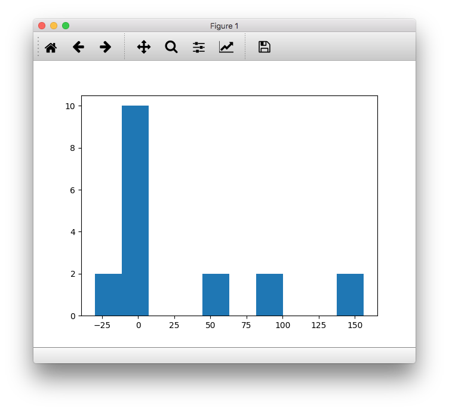
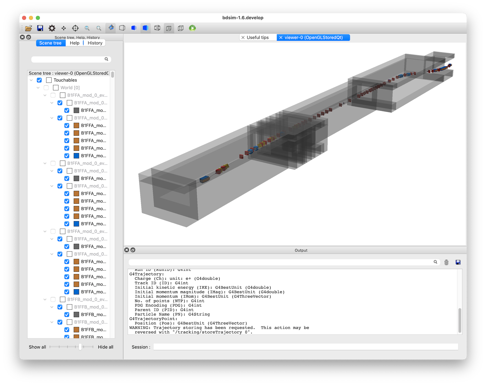
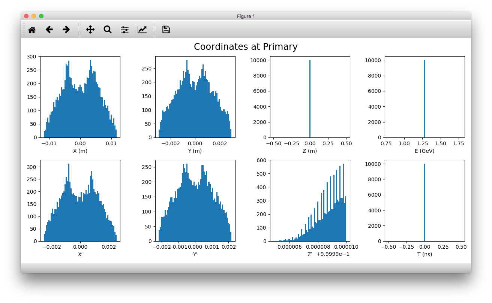
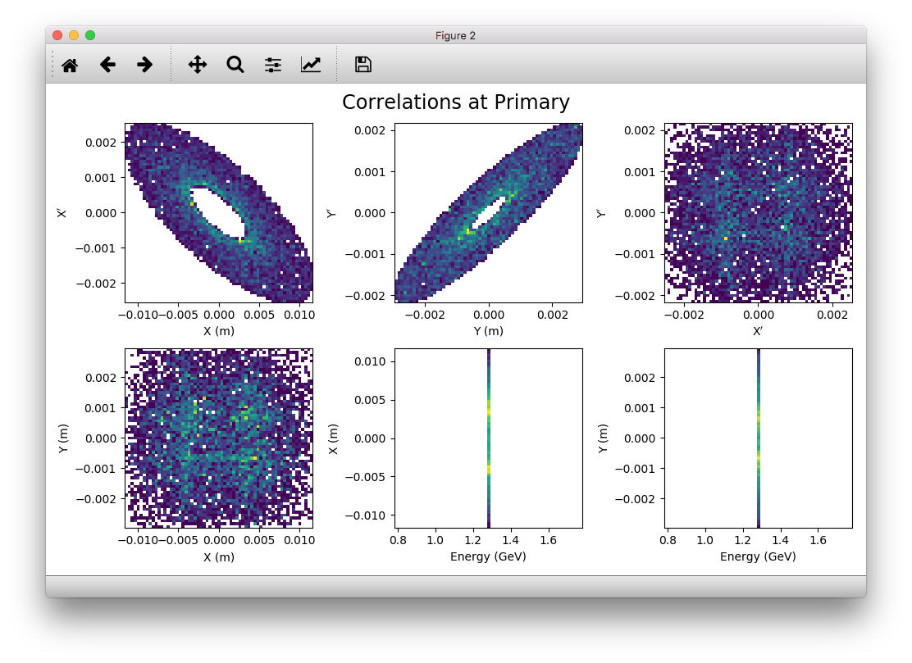
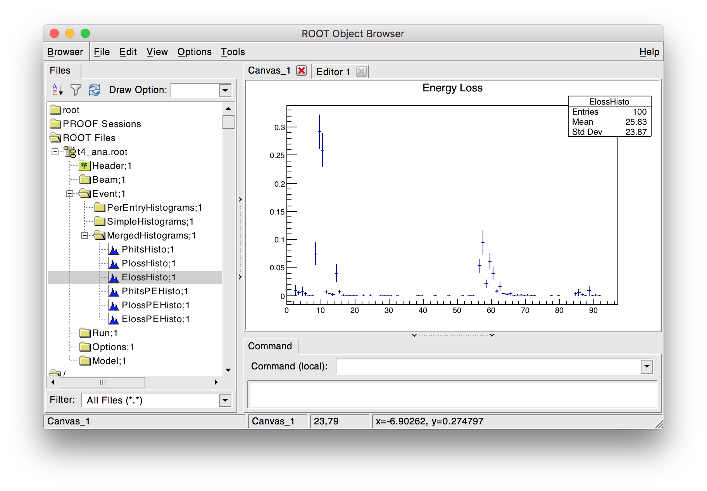
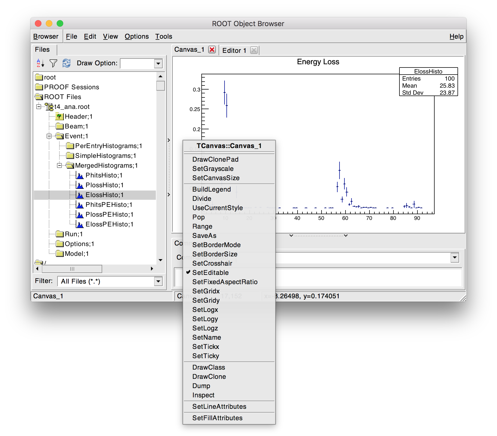
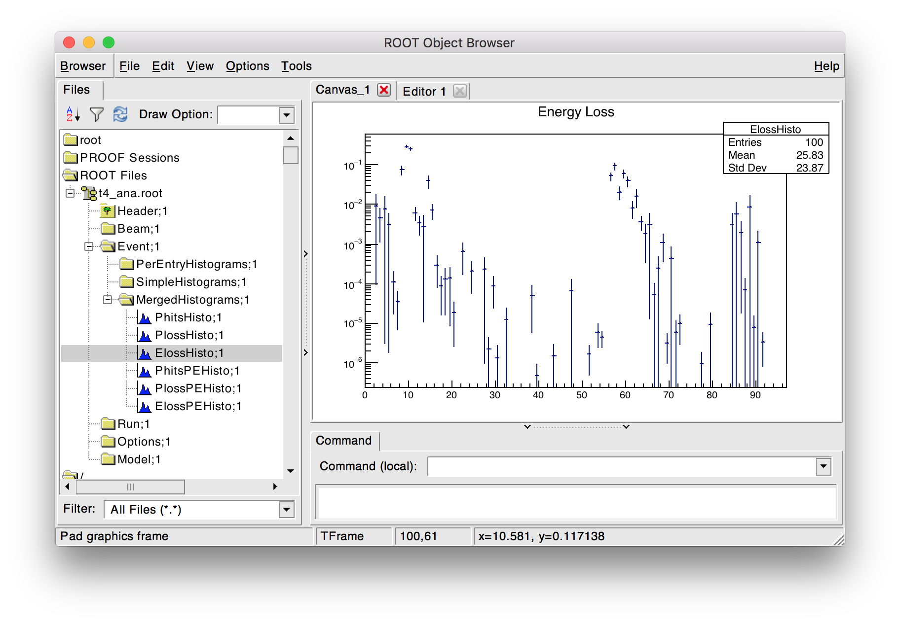

Accelerator Test Facility 2 - KEK, Japan
Topics Covered
Prepare TWISS file from MADX
Handle MADX TFS output
Convert MADX to BDSIM
Compare optics
Geometry placement
Beam halo
Make particle spectra
Analyse beam loss fraction
Use MADX, pymadx, pybdsim, bdsim, rebdsim, rebdsimOptics, rebdsimHistoMerge, ROOT
Based on several models in
bdsim/examples/atf2
Contents
Preparation
BDSIM has been compiled and installed.
The (DY)LD_LIBRARY_PATH and ROOT_INCLUDE_PATH environmental variables are set as described in Setup.
ROOT can be imported in Python
pymadx and pybdsim have been installed.
Model Description
This is the 1.3GeV energy scaled test facility for the ILC final focus system. The real machine consists of an approximately 70m normal conducting linac, transfer line, racetrack damping ring and finally an extraction line. This model represents only the ~100m single-pass extraction line.
Input Preparation
A MAD-X job was used to prepare a Twiss table from MAD-X in TFS format. This is included in bdsim/examples/atf2/atf2-nominal-twiss-v5.2.tfs.tar.gz. The file was prepared by adding the following to the end of the MAD-X job:
select,flag=twiss, clear;
twiss,sequence=ATF2, file=atf2-nominal-twiss-v5.2.tfs;
As we don’t specify any columns, all columns are written out (~250). Whilst this may seem overkill, it ensures we don’t miss any of the required columns for conversion.
For convenience we compress this to save space. pybdsim and pymadx both work with a compressed TFS file without the need to decompress it.
tar -czf atf2-nominal-twiss-v5.2.tfs.tar.gz atf2-nominal-twiss-v5.2.tfs
Input Inspection
We can inspect the model as provided by MAD-X with pymadx in Python.
> python
>>> import pymadx
>>> a = pymadx.Data.Tfs("atf2-nominal-twiss-v5.2.tfs.tar.gz")
>>> a.ReportPopulations()
Filename > atf2-nominal-twiss-v5.2.tfs.tar.gz
Total number of items > 1032
Type........... Population
MULTIPOLE...... 516
DRIFT.......... 201
QUADRUPOLE..... 102
MARKER......... 78
MONITOR........ 64
SBEND.......... 24
SEXTUPOLE...... 18
HKICKER........ 15
VKICKER........ 14
We can also inspect the strengths of all the sextupoles for example
>>> sextupoles = a.GetElementsOfType('SEXTUPOLE')
>>> len(sextupoles)
18
>>> type(sextupoles)
pymadx.Data.Tfs
>>> import matplotlib.pyplot as plt
>>> plt.hist(sextupoles.GetColumn("K2L")/sextupoles.GetColumn("L"))
This produces the following figure:
{kind=link}

Conversion
The model can be converted to BDSIM’s GMAD syntax with the converter provided in pybdsim.
> python
>>> import pybdsim
>>> a,b = pybdsim.Convert.MadxTfs2Gmad('atf2-nominal-twiss-v5.2.tfs.tar.gz', 'atf2bdsim')
The converter will automatically generate a Twiss beam distribution based on the first element of the lattice. If the first element is not a marker the beam will be wrong as the optical functions from MAD-X are typically at the end of each element (they can be set to the middle too, but not to the beginning). The user should check the distribution.
This converts the model as is. We can also prepare a linear only version of the model:
>>> a,b = pybdsim.Convert.MadxTfs2Gmad('atf2-nominal-twiss-v5.2.tfs.tar.gz', 'atf2bdsimlinear', linear=True)
Several gmad files are created:
> ls
atf2bdsimlinear.gmad
atf2bdsimlinear_beam.gmad
atf2bdsimlinear_components.gmad
atf2bdsimlinear_options.gmad
atf2bdsimlinear_sequence.gmad
The components are defined in the file with components suffix, the sequence, options and beam similarly. These GMAD files are included in the main file atf2bdsimlinear.gmad.
No options are required by default to get a working model.
Only tracking is provided by default - no physics processes are registered.
By default, a sampler is attached to all items with the
sample, all;command in the main file.
Optical Validation
First we validate that the Twiss beam definition in the converted model is correct for our machine. This is the case as the first item in the lattice is a marker in the MAD-X job. The emittance and energy spread were also correctly specified in the MAD-X job and have therefore been converted correctly.
We run 1000 particles to validate the optics:
bdsim --file=atf2bdsimlinear.gmad --outfile=o1 --batch --ngenerate=1000
This output file can then be analysed to calculate the beam size and optical functions:
rebdsimOptics o1.root optics.root
We can now compare the optical functions using pybdsim.
> python
>>> import pybdsim
>>> pybdsim.Compare.MadxVsBDSIM('atf2-nominal-twiss-v5.2-sige0.tfs', 'optics.root')
This produces a series of plots comparing beam size and optical functions such as the following:
Beam size.
Angular beam size.
Beam centroid.
Twiss \(\beta\) function. Only the first part is shown due to the large variation.
Twiss \(\alpha\) function. Only the first part is shown due to the large variation.
Note, with nonlinear optics (i.e. including sextupoles and higher) the emittance between each plane (horizontal, vertical) will be mixed and the calculated optical functions are not representative. A model converted with the ‘linear’ flag will however be valid.
This step verifies that the model has been prepared correctly and matches the model in the original program, MAD-X.
Note
The energy spread used in BDSIM beam definition must be the same as that in the Twiss output from MAD-X for the comparison to be valid.
Note
The errors are the statistical uncertainty associated with the calculation. It is possible depending on the number of particles for the model to agree but the original lie outside the error bars.
Adding to Model
At this point, we can add more detail to the model. Here we place a GDML file containing the tunnel geometry around the beam line. This geometry was prepared externally and designed to have a hollow outermost ‘world’ volume so that it does not overlap with the beam line - both exist at the same level in the hierarchy. If the tunnel container were not hollow, the beam line would overlap with the tunnel geometry and tracking would be invalid.
In the main GMAD file, we define a placement of the geometry with the appropriate transform.
tun : placement, geometryFile="gdml:atf2_tunnel.gdml", x=-4.5*m, z=49*m;
The example GDML file (“atf2_tunnel.gdml”) is provided in bdsim/examples/atf2/. An example
file including this geometry with the placement above is provided in
bdsim/examples/atf2/nlsige/atf2-with-tunnel.gmad.
Care must be taken not to place geometry that overlaps with the beam line otherwise the tracking
will be wrong. Using the option, checkOverlaps=1; option is recommended when placing the
geometry for the first time. Once validated, this can be turned off for speed.
{kind=link}

Visualisation of the ATF2 in BDSIM with GDML tunnel model.
Geometry can be added for magnet yokes, placed alongside the beam line and placed in the beam line. See Externally Provided Geometry for more details.
Custom field maps could also be added to the yokes of particular magnets. A general field map for quadrupoles could also be added for example and auto-scaling used to scale the field map for each quadrupole it’s attached to. See Fields for more details.
One simple change is to specify a default aperture for all components.
option, aper1=1.5*cm,
beampipeThickness=1*mm;
The typical beam pipe width of the ATF2 is 30mm and the thickness ~1.5mm.
Changing Beam Distribution
As the model stands, it is not very interesting. The default aperture of 5cm is much bigger than the typical sigma of the beam, which from the optics plots above can seen to be of order 1mm. To experience even a few hits, would require billions of events to be simulated, which is of course not very efficient. We therefore specify a halo distribution of particles that are likely to hit the aperture. The halo distribution is described in Beam Distributions and specifically in halo. We define a halo distribution according to the normal Twiss parameters at the start of the lattice but with a much greater sigma.
Even if a Gaussian distribution is ultimately required, a common technique is to generate a uniform distribution of particles and then weight the events in analysis according to the Gaussian.
Here is an example halo distribution
beam, alfx=1.108024744,
alfy=-1.907222942,
betx=6.848560987*m,
bety=2.935758992*m,
distrType="halo",
emitx=2e-09*m,
emity=1.195785323e-11*m,
energy=1.282*GeV,
particle="e-",
sigmaE=0.0008,
haloNSigmaXInner = 30,
haloNSigmaXOuter = 80,
haloNSigmaYInner = 100,
haloNSigmaYOuter = 500,
haloPSWeightParameter = 1,
haloPSWeightFunction = "oneoverr";
To validate this distribution and visualise it, we can generate only the particles without
performing the full simulation. We execute BDSIM with the --generatePrimariesOnly
option. As the generation is very quick, we can afford to generate a large number of particles.
Here 10000 were generated in approximately 10s.
bdsim --file=atf2-halo.gmad --generatePrimariesOnly --outfile=haloprimaries --batch --ngenerate=10000
We can then load and visualise the data using pybdsim. This is shown using a convenience function for the primary particle distribution:
> python
>>> import pybdsim
>>> pybdsim.Plot.PrimaryPhaseSpace('haloprimaries.root')
This produces the following figures. The user of course can create their own plots by loading the data.
{kind=link}

{kind=link}

The raw data can be loaded from any sampler manually:
> python
>>> import pybdsim
>>> d = pybdsim.Data.Load("haloprimaries.root")
>>> psd = pybdsim.Data.PhaseSpaceData(d)
>>> allData = pybdsim.Data.SamplerData(d,0)
The “phase space data” is only the data required to make the above plots. The “sampler data” is all the data including weights, PDG ID, track ID etc.
The object “psd” here contains a member dictionary called “data” that has a numpy array for each key inside it.
>>> psd.data.keys()
['energy', 'T', 'yp', 'y', 'x', 'xp', 'z', 'zp']
>>> x = psd.data['x']
Halo Simulation
As the model stands, no physics processes are registered so any particles hitting the machine will not interact with the matter and pass straight through. This is useful for efficient tracking and optical validation but not useful for a physics study. We therefore specify a physics list. For a 1.3GeV electron, the basic electromagnetic physics list from Geant4 as well as the decay physics and some muon specific processes are useful. The full set of physics lists are described in Physics Processes.
option, physicsList="em decay muon";
By default, samplers are attached to everything. Whilst suitable for optical comparison this produces a huge amount of data for a physics study. We turn this off by commenting it out with an exclamation mark.
!sample, all;
We have now specified the halo distribution as described above, a default aperture and physics processes. One final step is to turn off sensitivity to the tunnel geometry as this is not required.
tun : placement, geometryFile="gdml:../atf2_tunnel.gdml", x=-4.5*m, z=49*m, sensitive=0;
The input gmad file prepared is supplied in bdsim/examples/atf2/nlsige/atf2-halo.gmad.
We first run a small sample to gauge the length of the simulation and that the results are very roughly what we expect or want to see (before running a large number of particles).
> bdsim --file=atf2-halo.gmad --outfile=t1 --batch --ngenerate=100
This took approximately 10s to simulate and produced an output file “t1.root”. We perform a very quick and simple analysis now to investigate what happened in the simulation.
Analysis
The first simple analysis step is make a histogram of the mean energy deposition per event. BDSIM by default records a histogram of energy deposition per event. One could run the analysis tool rebdsim with an input analysisConfig.txt specifying histograms. This would also merge (take the average of) the pre-made per event histograms. A utility is provided for merging only the histograms.
> rebdsimHistoMerge t1.root t1_ana.root
This loops over all events in the file and combines the per event histograms and writes them to a file called “t1_ana.root” here. To inspect this file, we load it in ROOT and browse it using a TBrowser.
> root -l t1_ana.root
> $> TBrowser tb;
This produces the following browser. We double click on the “t1_ana.root” file and then the folders inside. There is a folder for each Tree in the output and then per entry simple and merged histograms. We look inside and double click on the histogram to view it.
{kind=link}

TBrowser in ROOT showing file structure from rebdsim / rebdsimHistoMerge.
The energy deposition is in GeV / event. The horizontal axis is the curvilinear S coordinate in
metres. The default binning is 1m and can be controlled with the option
option, elossHistoBinWidth=1*m;.
As the level of energy deposition varies by many orders of magnitude, it is useful to view the histogram on a logarithmic scale. By right-clicking in the TBrowser close to the axis, the option “SetLogy” can be used.
{kind=link}

Setting log y axis in ROOT.
{kind=link}

Energy deposition for 100 events from halo simulation.
We can then repeat this simulation and simple analysis for a greater number of primary particles. The
file examples/atf2/10khalo_ana.root is included from the analysis of 10000 particles. The simulation
took 976s and produced a 178MB ROOT output file on the developer’s computer.
Spectra at Plane
To investigate the radiation at a plane at some point in the accelerator we can place a sampler on an element of interest. Here, we place a sampler on “B5FFB”, which is a dipole at the end of the long straight section in the lattice. In reality, cherenkov detectors were placed after this dipole in the past for detecting signal from experiments such as the laserwire experiment. The sampler is added via the command:
sample, range=B5FFB;
Sampler record the passage of any particle through them, even if it’s backwards or the same particle again. They are (by default) a 5m wide square plane that’s 1pm thick.
A simple analysis is to make a 2D histogram of the particle flux and the energy weighted particle
flux at this plane. To do this we use the analysis tool rebdsim. This takes an input text file
defining histograms. The syntax is described in Preparing an Analysis Configuration File. The
analysisConfig.txt used is provided in examples/atf2/analysisConfig.txt.
InputFilePath 10k.root
OutputFileName 10khalo_ana.root
# Object treeName Histogram Name # Bins Binning Variable Selection
Histogram1D Event. XFlux {40} {-2:2} B5FFB.x 1
Histogram1D Event. XFlux-Energy-Weighted {40} {-2:2} B5FFB.x B5FFB.energy
Histogram1D Event. YFlux {40} {-2:2} B5FFB.y 1
Histogram1D Event. YFlux-Energy-Weighted {40} {-2:2} B5FFB.y B5FFB.energy
Histogram2D Event. XYFlux {20,20} {-0.5:0.5,-0.5:0.5} B5FFB.y:B5FFB.x 1
Histogram2D Event. XYFlux-Energy-Weighted {20,20} {-0.5:0.5,-0.5:0.5} B5FFB.y:B5FFB.x B5FFB.energy
Histogram1D Event. XPhotons {40} {-2:2} B5FFB.x B5FFB.partID==22
Histogram1D Event. XElectrons {40} {-2:2} B5FFB.x B5FFB.partID==11
Histogram1D Event. XPositrons {40} {-2:2} B5FFB.x B5FFB.partID==-11
We can view the histograms as before, but we can also easily load them in Python and make our own plots.
> python
>>> import pybdsim
>>> d = pybdsim.Data.Load("10khalo_ana.root")
>>> d. <tab>
d.ConvertToPybdsimHistograms d.histograms1dpy d.histograms3dpy
d.filename d.histograms2d d.histogramspy
d.histograms d.histograms2dpy d.ListOfDirectories
d.histograms1d d.histograms3d d.ListOfTrees
The pybdsim data loader automatically extracts the root histograms into Python dictionaries called “histogramsXd” where “X” is the number of dimensions. All exist in “histograms”. These are also automatically converted to numpy arrays and held in classes provided by pybdsim in the same members suffixed with “py” such as “d.histograms1dpy”. Calling these dictionaries shows the name of the histogram that is the full path inside the file.
{'Event/MergedHistograms/ElossHisto': <ROOT.TH1D object ("ElossHisto") at 0x7f83a0cfba20>,
'Event/MergedHistograms/ElossPEHisto': <ROOT.TH1D object ("ElossPEHisto") at 0x7f83a1970000>,
'Event/MergedHistograms/PhitsHisto': <ROOT.TH1D object ("PhitsHisto") at 0x7f83a0cfa8e0>,
'Event/MergedHistograms/PhitsPEHisto': <ROOT.TH1D object ("PhitsPEHisto") at 0x7f83a1a00640>,
'Event/MergedHistograms/PlossHisto': <ROOT.TH1D object ("PlossHisto") at 0x7f83a0cfb310>,
'Event/MergedHistograms/PlossPEHisto': <ROOT.TH1D object ("PlossPEHisto") at 0x7f83a1a00a30>,
'Event/PerEntryHistograms/XElectrons': <ROOT.TH1D object ("XElectrons") at 0x7f83a0cd89b0>,
'Event/PerEntryHistograms/XFlux': <ROOT.TH1D object ("XFlux") at 0x7f83a0c94300>,
'Event/PerEntryHistograms/XFlux-Energy-Weighted': <ROOT.TH1D object ("XFlux-Energy-Weighted") at 0x7f83a0cd70f0>,
'Event/PerEntryHistograms/XPhotons': <ROOT.TH1D object ("XPhotons") at 0x7f83a0cd8320>,
'Event/PerEntryHistograms/XPositrons': <ROOT.TH1D object ("XPositrons") at 0x7f83a0cd95a0>,
'Event/PerEntryHistograms/XYFlux': <ROOT.TH2D object ("XYFlux") at 0x7f839c5ef200>,
'Event/PerEntryHistograms/XYFlux-Energy-Weighted': <ROOT.TH2D object ("XYFlux-Energy-Weighted") at 0x7f839c5eb000>,
'Event/PerEntryHistograms/YFlux': <ROOT.TH1D object ("YFlux") at 0x7f83a0cd74e0>,
'Event/PerEntryHistograms/YFlux-Energy-Weighted': <ROOT.TH1D object ("YFlux-Energy-Weighted") at 0x7f83a0cd7de0>}
The Python versions can be easily plotted using pybdsim.
>>> pybdsim.Plot.Histogram1D(d.histograms1dpy['Event/PerEntryHistograms/XElectrons'])
>>> pybdsim.Plot.Histogram2D(d.histograms2dpy['Event/PerEntryHistograms/XYFlux'])
These produce the following figures.
We leave it to the user to create the plots they desire. However, the primary particle impact, loss and associated energy deposition is a useful standard plot that is provided in pybdsim. The optional survey arguments allow a machine diagram to be added on top of the plot.
>>> pybdsim.Plot.LossAndEnergyDeposition('10khalo_ana.root', tfssurvey='../atf2-nominal-twiss-v5.2.tfs.tar.gz')
Primary particle impact points, losses and energy deposition from the simulation.
Just the energy deposition can be plotted.
>>> pybdsim.Plot.EnergyDeposition('10khalo_ana.root', tfssurvey='../atf2-nominal-twiss-v5.2.tfs.tar.gz')
Primary particle impact points, losses and energy deposition from the simulation.